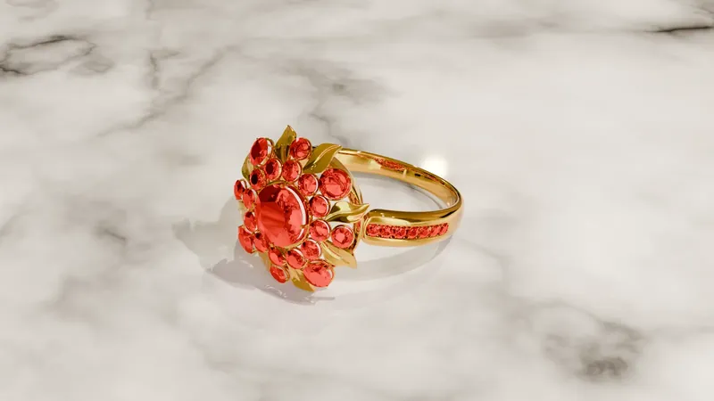

Bague cocktail · Rendu et vues du modèle 3D
Bague cocktail Fleur en or jaune et pierres rouges
Une bague cocktail à motif floral : une pierre ronde centrale, entourée de pierres rondes plus petites entre lesquelles s'intercalent des pétales de métal. Le corps de bague porte de chaque côté une ligne de petites pierres rondes.
La pièce est présentée sous quatre angles : un rendu photoréaliste en or jaune et trois vues du modèle 3D (profil, face, dessus), qui servent à contrôler les proportions, la hauteur de la tête et l'alignement des pierres.
Prestations liées : modélisation 3D de bijoux, rendu photoréaliste.